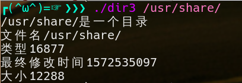

access库函数
access函数用于判断当前操作系统用户对文件或目录的存取权限。
1 | // 包含头文件： |
- 参数说明：
pathname文件名或目录名，可以是当前目录的文件或目录，也可以列出全路径。
mode 需要判断的存取权限。在头文件unistd.h中的预定义如下：1
2
3
4
返回值：
当pathname满足mode的条件时候返回0，不满足返回-1。
在实际开发中，access函数主要用于判断文件或目录是否是存在。
stat库函数
stat结构体
struct stat结构体用于存放文件和目录的状态信息，如下：
1 | struct stat |
struct stat结构体的成员变量比较多，对程序员来说，重点关注st_mode、st_size和st_mtime成员就可以了。注意st_mtime是一个整数表达的时间，需要程序员自己写代码转换格式。
st_mode成员的取值很多，或者使用如下两个宏来判断。
1 | S_ISREG (st_mode) 是否为一般文件 |
stat库函数
1 | // 包含头文件： |
stat函数获取path指定文件或目录的信息，并将信息保存到结构体buf中，执行成功返回0，失败返回-1。
- 示例
1
2
3
4
5
6
7
8
9
10
11
12
13
14
15
16
17
18
19
20
21
22
23
24
25
26
27
28
int main(int argc, char *argv[])
{
if(access(argv[1], F_OK) == -1)
{
printf("文件或目录%s不存在", argv[1]);
return -1;
}
struct stat st_stat;
//获取文件状态信息
if(stat(argv[1], &st_stat) == -1)
return -1;
if(S_ISREG(st_stat.st_mode))
printf("%s是一个文件\n", argv[1]);
if(S_ISDIR(st_stat.st_mode))
printf("%s是一个目录\n", argv[1]);
printf("文件名%s\n类型%d\n最终修改时间%ld\n大小%ld\n" ,\
argv[1], st_stat.st_mode, st_stat.st_mtime, st_stat.st_size);
return 0;
}
运行结果

utime库函数
utime函数用于修改文件的存取时间和更改时间。
1 | // 包含头文件： |
函数说明：utime()用来修改参数filename 文件所属的inode 存取时间。如果参数times为空指针(NULL), 则该文件的存取时间和更改时间全部会设为目前时间。结构utimbuf 定义如下：
1 | struct utimbuf |
返回值：执行成功则返回0，失败返回-1。
rename库函数
rename函数用于重命名文件或目录，相当于操作系统的mv命令，对程序员来说，在程序中极少重命名目录，但重命名文件是经常用到的功能。
1 | // 包含头文件： |
- 示例
1
rename("/home/user/aaa.txt", "/home/user/aaa_new.txt");
参数说明：
oldpath 文件或目录的原名。
newpath 文件或目录的新的名称。
返回值：0-成功，-1-失败。
remove库函数
remove函数用于删除文件或目录，相当于操作系统的rm命令。
1 | // 包含头文件： |
参数说明：
pathname 待删除的文件或目录名。
返回值：0-成功，-1-失败。